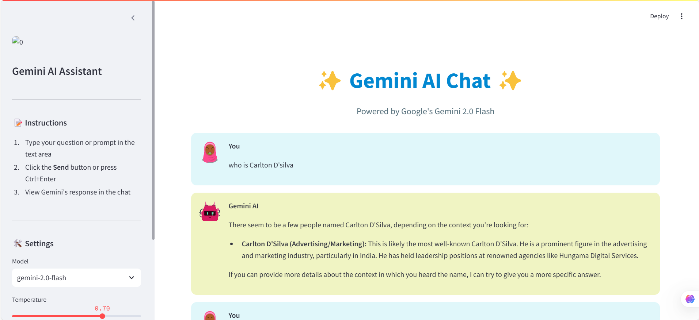

Challenges Faced
One of the biggest challenges I faced while preparing for ROE was my lack of understanding of API integration. Initially, I was confused about how to connect APIs with LLM models, which led to frustration. However, after watching several tutorials on YouTube, I learned about Streamlit, FastAPI, LLM models, Ollama, and open-source LLMs.
Another challenge was working with file extractions, such as handling JSON, CSV, and PDFs. I explored modules like pdfplumber, JSON handling, and CSV extraction, which helped me gain confidence. Docker was another roadblock since I had skipped the relevant lecture. To overcome this, I referred to Apni College's tutorial on YouTube and successfully learned how to create images and containers.
I also explored ngrok for global hosting, which was a new concept for me. Before this, I only knew about GitHub Pages. While preparing for ROE, I significantly improved my understanding of web scraping using requests, Scrapy, and pandas. Despite all this learning, I still face some difficulties in GitHub Actions and graph routing problems.
Most Useful Resources
- TDS–The resouce provided taugh me lot like understanding concept and applying that and it introduced to me great youtuber that teach technology <
- Apni College – Helped me learn Docker and other concepts.
- YouTube – Helped me learn Docker, pandas, NumPy, FastAPI, Streamlit, and LangChain.
- VS Code & GitHub Copilot – Assisted in writing efficient code.
- Google & Wikipedia – Helped with troubleshooting errors and learning new concepts.
- ChatGPT – Aided in debugging and solving coding challenges.
Areas for Improvement
Through this experience, I have gained valuable skills and confidence in solving real-world industry problems. I now feel capable of building applications with multiple functionalities. Recently, I even developed a Gemini AI chatbot that allows users to interact with professionals for guidance.
Gemini AI Chatbot
I could have improved my approach by structuring my learning more efficiently and practicing GitHub Actions and distance graph routing more thoroughly. However, I am proud of the progress I have made and the knowledge I have gained.